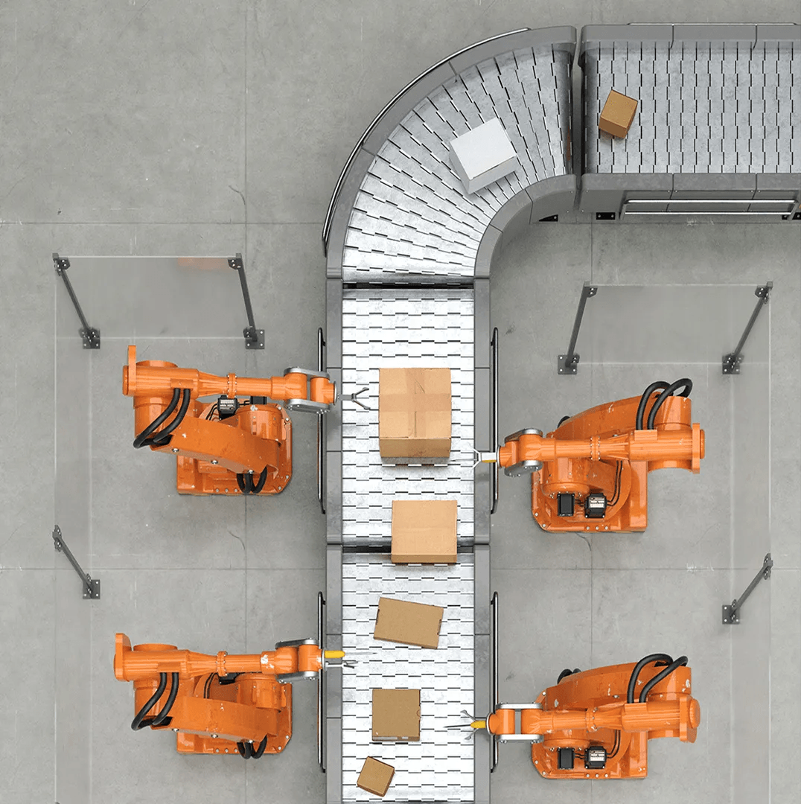
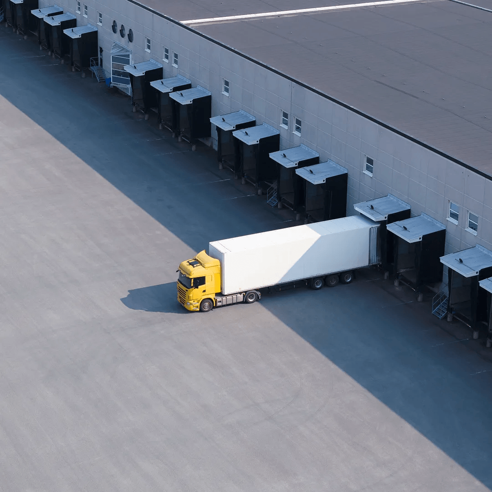

Supply chains have always been about connection. People, places, systems and products all working in sync to keep businesses running, customers happy and teams moving forward.
But right now, those connections are under pressure. Disruption is more frequent. Costs are rising. Talent is harder to find and hold onto. And many organisations are still relying on legacy tools and siloed systems that can't keep up with what today demands.
That's why so many supply chain leaders are stepping back and rethinking their strategy. They want better visibility. Simpler communication. Stronger resilience. And the confidence that every part of the chain – from planning and procurement to customer returns – is working as one.
This guide is here to show how BT can help you build a supply chain that's more connected, more transparent and better equipped to handle change. One that supports your teams, serves your customers and grows with your business.
However complex things get, BT's got your back.

Why an interconnected supply chain matters
Understand the challenges today's supply chain leaders are facing – and how BT can help you take a more connected, resilient approach.
What happens if your supply chain stays the same?
Explore the hidden risks of a disconnected supply chain.
What does an interconnected supply chain look like?
Explore how BT supports every stage of the supply chain.
Your supply chain questions, answered
Find answers to common questions about BT's solutions and how they integrate across your business.

Get in touch
Ready to explore your options? Find the right contact details and helpful links to start your supply chain conversation with BT.